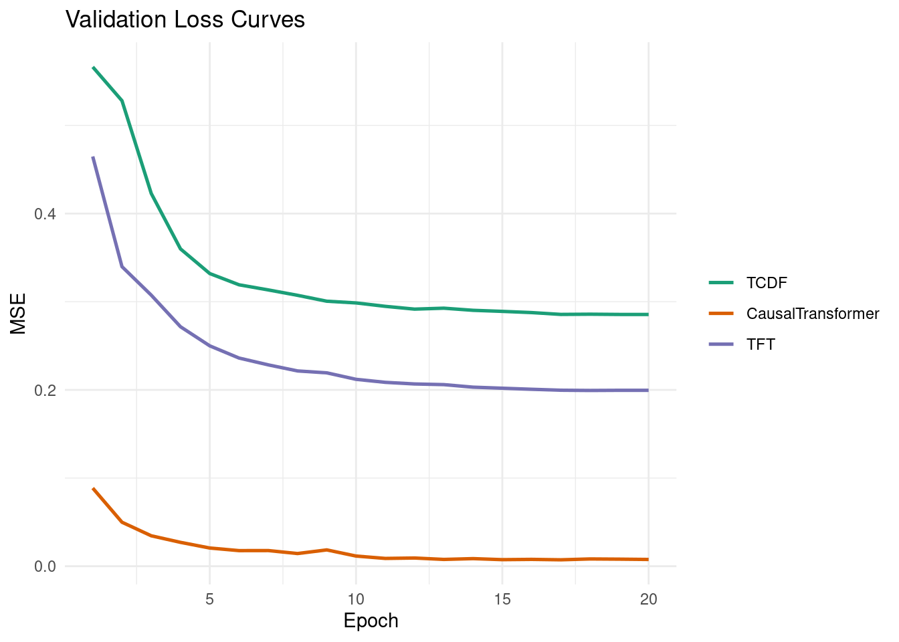
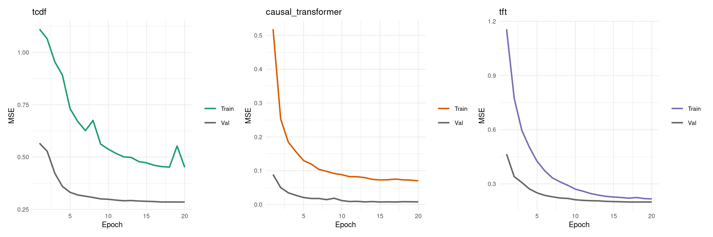
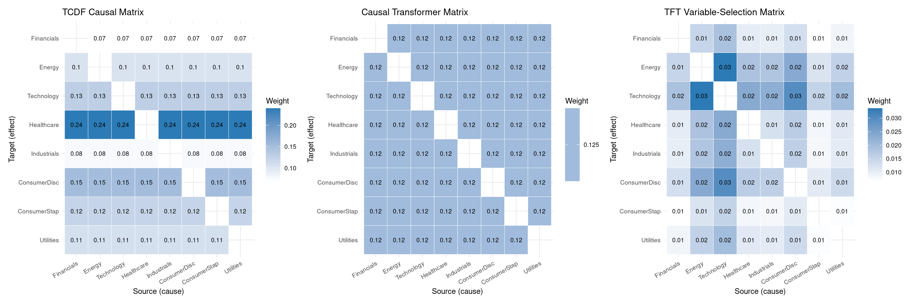
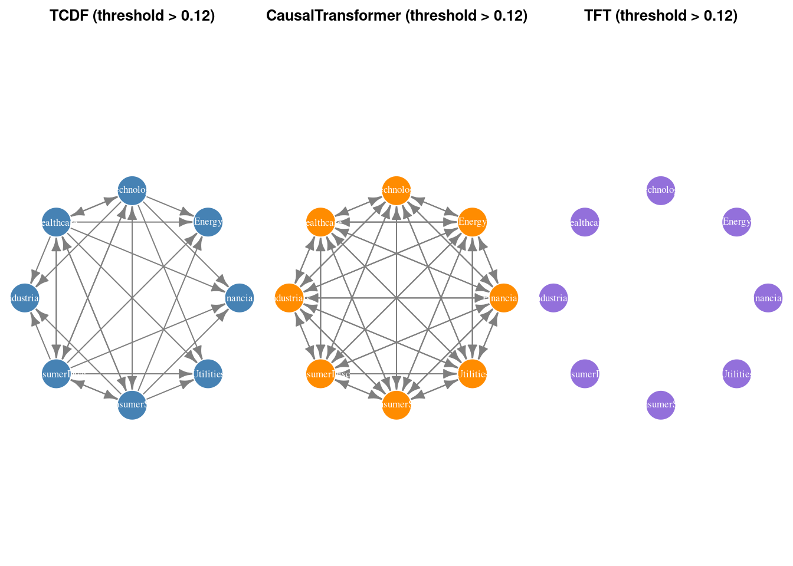
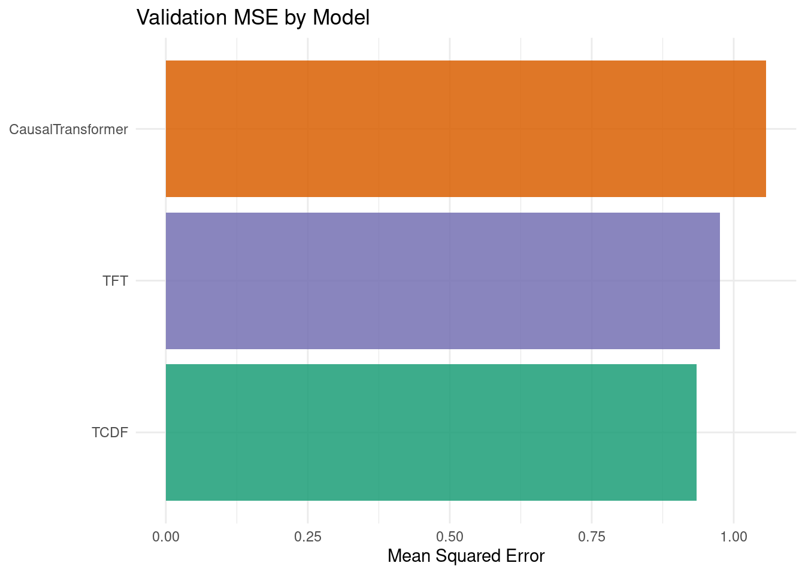
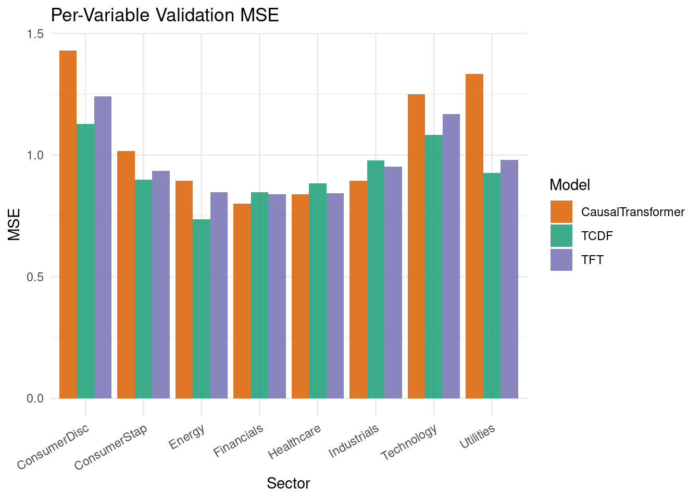

Code
packages <- c(
'tidyverse',
'plyr',
'RCausalML',
'torch',
'tidyquant',
'reshape2',
'scales',
'patchwork',
'igraph'
)
Attention mechanisms compute pairwise relevance scores between all time steps and variables simultaneously, creating a natural inductive structure for causal discovery:
The self-attention score between query \(q_i\) and key \(k_j\):
\[ \alpha_{ij} = \frac{\exp\!\left(q_i^\top k_j / \sqrt{d_k}\right)}{\sum_l \exp\!\left(q_i^\top k_l / \sqrt{d_k}\right)} \]
When interpreted causally, \(\alpha_{ij}\) approximates the influence of variable/time \(j\) on variable/time \(i\).
TCDF (Nauta et al., 2019) uses depthwise separable causal convolutions + self-attention to discover time-delayed causal relationships.
Key ideas:
The convolution at dilation \(r\):
\[\text{Conv}(x, t) = \sum_{k=0}^{K-1} w_k \cdot x(t - r \cdot k)\]
Causal mask ensures \(x(t - r \cdot k)\) uses only past values (\(k \geq 0\), never \(k < 0\)).
A Transformer with three structural modifications that enforce causal reasoning:
The causal attention output:
\[\text{CausalAttn}(Q, K, V) = \text{softmax}\!\left(\frac{QK^\top}{\sqrt{d_k}} + M_{\text{causal}}\right) V\]
where \(M_{\text{causal}}[i,j] = -\infty\) if \(j > i\), else \(0\).
TFT (Lim et al., 2021, Google) is the state-of-the-art architecture for interpretable multi-horizon forecasting. Its causal structure comes from:
TFT architecture flow:
Input variables
│
▼
Variable Selection Network ← learns which vars matter (causal weights)
│
▼
LSTM Encoder/Decoder ← captures local temporal dynamics
│
▼
Multi-Head Self-Attention ← captures long-range dependencies
│
▼
Gated Residual + LayerNorm ← stabilize gradients
│
▼
Output Head ← one-step-ahead forecast per variableWe use {RCausalML}’s attn_causal_model() function (and its convenience wrappers tcdf_model(), causal_transformer_model(), tft_model()) to fit all three architectures on S&P 500 sector ETF daily log-return data (2018–2024).
packages <- c(
'tidyverse',
'plyr',
'RCausalML',
'torch',
'tidyquant',
'reshape2',
'scales',
'patchwork',
'igraph'
)# Install missing packages
#new_packages <- packages[!(packages %in% installed.packages()[,"Package"])]
#if(length(new_packages)) install.packages(new_packages)# When rendering from package root, use local RCausalML
if (file.exists("DESCRIPTION") && requireNamespace("devtools", quietly = TRUE)) {
try(devtools::load_all(".", quiet = TRUE), silent = TRUE)
}
invisible(lapply(packages, function(pkg) {
suppressPackageStartupMessages(library(pkg, character.only = TRUE))
}))set.seed(42)
select_torch_device <- function(min_free_mb = 512L) {
if (!requireNamespace("torch", quietly = TRUE)) return("cpu")
if (!torch::cuda_is_available()) return("cpu")
smi_out <- tryCatch(
suppressWarnings(system2(
"nvidia-smi",
args = c("--query-gpu=memory.free", "--format=csv,noheader,nounits"),
stdout = TRUE,
stderr = FALSE
)),
error = function(e) character(0)
)
if (length(smi_out) >= 1L) {
free_mb <- suppressWarnings(as.numeric(trimws(smi_out[1L])))
if (!is.na(free_mb) && free_mb < min_free_mb) {
message(sprintf(
"CUDA has ~%d MiB free (< %d MiB required); using CPU.",
round(free_mb), min_free_mb
))
return("cpu")
}
}
ok <- tryCatch({
x <- torch::torch_randn(c(32L, 20L, 128L), device = "cuda")
torch::nnf_gelu(x)
rm(x)
torch::cuda_empty_cache()
TRUE
}, error = function(e) FALSE)
if (!ok) {
message("CUDA probe failed (likely out of memory); using CPU.")
return("cpu")
}
"cuda"
}
device_use <- select_torch_device(min_free_mb = 512L)
if (requireNamespace("torch", quietly = TRUE)) torch::torch_manual_seed(42)
cat(sprintf("Using device: %s\n", device_use))Using device: cudaThis section downloads S&P 500 sector ETF prices (the same universe used in the companion notebooks), converts them to standardized log-returns, and builds lagged input/output arrays for training.
Note: If online market data is unavailable, the notebook automatically falls back to synthetic demo data so all downstream cells remain runnable.
TICKERS <- c(
"XLF" = "Financials",
"XLE" = "Energy",
"XLK" = "Technology",
"XLV" = "Healthcare",
"XLI" = "Industrials",
"XLY" = "ConsumerDisc",
"XLP" = "ConsumerStap",
"XLU" = "Utilities"
)
fetch_close_prices <- function(tickers, start = "2018-01-01", end = "2024-01-01") {
tryCatch({
raw <- tidyquant::tq_get(names(tickers), get = "stock.prices",
from = start, to = end, complete_cases = TRUE)
if (is.null(raw) || nrow(raw) == 0) return(NULL)
raw |>
dplyr::select(symbol, date, adjusted) |>
tidyr::pivot_wider(names_from = symbol, values_from = adjusted) |>
dplyr::arrange(date) |>
tidyr::drop_na()
}, error = function(e) NULL)
}
close_wide <- fetch_close_prices(TICKERS)
if (is.null(close_wide) || nrow(close_wide) < 30) {
message("Warning: market data unavailable; using synthetic demo data.")
set.seed(42)
n_steps <- 1600L
d_syn <- length(TICKERS)
A_syn <- matrix(0, d_syn, d_syn)
for (i in seq_len(d_syn)) {
A_syn[i, i] <- 0.45
if (i > 1) A_syn[i, i - 1] <- 0.25
if (i > 2 && i %% 2 == 1) A_syn[i, i - 2] <- 0.15
}
x_syn <- matrix(0, n_steps, d_syn)
x_syn[1, ] <- rnorm(d_syn)
noise_syn <- 0.15 * matrix(rnorm(n_steps * d_syn), n_steps, d_syn)
for (t in seq(2L, n_steps)) x_syn[t, ] <- x_syn[t - 1L, ] %*% t(A_syn) + noise_syn[t, ]
returns_df <- as.data.frame(x_syn)
colnames(returns_df) <- unname(TICKERS)
data_np <- scale(x_syn)
} else {
price_mat <- as.matrix(close_wide[, names(TICKERS)])
log_ret <- log(price_mat[-1L, ] / price_mat[-nrow(price_mat), ])
colnames(log_ret) <- unname(TICKERS[colnames(price_mat)])
returns_df <- as.data.frame(log_ret)
data_np <- scale(log_ret)
}
VAR_NAMES <- colnames(data_np)
d <- ncol(data_np)
Tt <- nrow(data_np)
cat(sprintf("d=%d variables, T=%d\n", d, Tt))d=8 variables, T=1508Variables: Financials, Energy, Technology, Healthcare, Industrials, ConsumerDisc, ConsumerStap, Utilities LAG <- 20L
AHEAD <- 1L
build_lag_dataset <- function(data, lag, ahead = 1L) {
N <- nrow(data) - lag - ahead + 1L
x_seq <- array(NA_real_, dim = c(N, lag, ncol(data)))
y_mat <- matrix(NA_real_, nrow = N, ncol = ncol(data))
for (t in seq_len(N)) {
x_seq[t, , ] <- data[t:(t + lag - 1L), , drop = FALSE]
y_mat[t, ] <- data[t + lag + ahead - 1L, ]
}
list(x_seq = x_seq, y_mat = y_mat)
}
lag_data <- build_lag_dataset(data_np, LAG, AHEAD)
X_seq <- lag_data$x_seq
Y_mat <- lag_data$y_mat
split <- floor(0.8 * nrow(X_seq))
X_tr <- X_seq[seq_len(split), , ]
X_val <- X_seq[(split + 1L):nrow(X_seq), , ]
Y_tr <- Y_mat[seq_len(split), ]
Y_val <- Y_mat[(split + 1L):nrow(Y_mat), ]
cat(sprintf("Train: (%d, %d, %d) Val: (%d, %d, %d)\n",
dim(X_tr)[1], dim(X_tr)[2], dim(X_tr)[3],
dim(X_val)[1], dim(X_val)[2], dim(X_val)[3]))Train: (1190, 20, 8) Val: (298, 20, 8)In this section, we describe the three attention-based neural network models implemented in RCausalML and fitted using attn_causal_model(). Each architecture is designed for multivariate time-series causal inference.
The foundational building block for TCDFNet is a causal dilated convolutional block:
In R (via torch), the internal .deepnet_attn_tcdf_net() constructor stacks n_layers such blocks, then applies a linear attention projection head and a two-layer MLP prediction head.
The R implementation of CausalTransformer:
nn_multihead_attention() that computes inter-variable attention — averaged weights form the causal matrix.The R implementation of TFTNet:
attn_causal_model() is the single entry point that fits TCDF, CausalTransformer, and TFT in sequence. Internally it:
cat("Fitting TCDF, CausalTransformer, and TFT ...\n")Fitting TCDF, CausalTransformer, and TFT ...attn_fit <- attn_causal_model(
data = data_np,
lag = LAG,
models = c("tcdf", "causal_transformer", "tft"),
hidden = 48L,
d_model = 64L,
n_heads = 4L,
n_layers = 4L,
dropout = 0.1,
epochs = 20L,
lr = 3e-4,
patience = 6L,
lam_sparse = 1e-4,
batch_size = if (identical(device_use, "cuda")) 32L else 64L,
val_split = 0.2,
device = device_use,
verbose = TRUE
)
cat("\nTraining complete.\n")
Training complete.cat("Validation MSE:\n")Validation MSE: tcdf causal_transformer tft
0.285523 0.007279 0.199344 val_mse_df <- data.frame(
Model = names(attn_fit$val_mse),
Val_MSE = unname(attn_fit$val_mse)
) |> dplyr::arrange(Val_MSE)
print(val_mse_df) Model Val_MSE
1 causal_transformer 0.007279254
2 tft 0.199344099
3 tcdf 0.285522908# Collect validation loss histories from all three models
hist_list <- attn_fit$histories
make_loss_df <- function(nm) {
h <- hist_list[[nm]]
if (is.null(h)) return(NULL)
data.frame(
epoch = seq_along(h$val),
val = h$val,
train = h$train,
model = nm
)
}
loss_df <- dplyr::bind_rows(lapply(names(hist_list), make_loss_df))
loss_df$model <- factor(loss_df$model,
levels = c("tcdf", "causal_transformer", "tft"),
labels = c("TCDF", "CausalTransformer", "TFT"))
ggplot(loss_df, aes(x = epoch, y = val, colour = model)) +
geom_line(linewidth = 0.9) +
scale_colour_manual(values = c(
"TCDF" = "#1b9e77",
"CausalTransformer" = "#d95f02",
"TFT" = "#7570b3"
)) +
labs(
title = "Validation Loss Curves",
x = "Epoch",
y = "MSE",
colour = NULL
) +
theme_minimal()
plot_model_loss <- function(nm, colour) {
h <- hist_list[[nm]]
if (is.null(h)) return(NULL)
df <- data.frame(
epoch = seq_along(h$val),
Train = h$train,
Val = h$val
) |> tidyr::pivot_longer(-epoch, names_to = "split", values_to = "loss")
ggplot(df, aes(x = epoch, y = loss, colour = split)) +
geom_line(linewidth = 0.85) +
scale_colour_manual(values = c("Train" = colour, "Val" = "grey40")) +
labs(title = nm, x = "Epoch", y = "MSE", colour = NULL) +
theme_minimal(base_size = 9)
}
p1 <- plot_model_loss("tcdf", "#1b9e77")
p2 <- plot_model_loss("causal_transformer","#d95f02")
p3 <- plot_model_loss("tft", "#7570b3")
patchwork::wrap_plots(p1, p2, p3, ncol = 3)
For each model, the learned causal matrix \(C \in \mathbb{R}^{d \times d}\) encodes variable-to-variable influence as learned through attention weights:
C_tcdf <- causal_matrix_attn(attn_fit, model = "tcdf")
C_ctrf <- causal_matrix_attn(attn_fit, model = "causal_transformer")
C_tft <- causal_matrix_attn(attn_fit, model = "tft")
cat("TCDF causal matrix (first 3 rows):\n")TCDF causal matrix (first 3 rows): Financials Energy Technology Healthcare Industrials ConsumerDisc
Financials 0.0695 0.0695 0.0695 0.0695 0.0695 0.0695
Energy 0.1036 0.1036 0.1036 0.1036 0.1036 0.1036
Technology 0.1293 0.1293 0.1293 0.1293 0.1293 0.1293
ConsumerStap Utilities
Financials 0.0695 0.0695
Energy 0.1036 0.1036
Technology 0.1293 0.1293plot_causal_heatmap <- function(C, title, var_names) {
A <- as.matrix(C)
diag(A) <- NA_real_
rownames(A) <- var_names
colnames(A) <- var_names
df <- reshape2::melt(A, na.rm = TRUE)
colnames(df) <- c("Target", "Source", "Weight")
df$Target <- factor(df$Target, levels = rev(var_names))
df$Source <- factor(df$Source, levels = var_names)
ggplot(df, aes(x = Source, y = Target, fill = Weight)) +
geom_tile(colour = "white") +
geom_text(aes(label = round(Weight, 2)), size = 2.5, colour = "black") +
scale_fill_gradient(low = "white", high = "#2C7BB6",
na.value = "grey90", name = "Weight") +
labs(title = title, x = "Source (cause)", y = "Target (effect)") +
theme_minimal(base_size = 9) +
theme(axis.text.x = element_text(angle = 30, hjust = 1))
}
p_tcdf <- plot_causal_heatmap(C_tcdf, "TCDF Causal Matrix", VAR_NAMES)
p_ctrf <- plot_causal_heatmap(C_ctrf, "Causal Transformer Matrix", VAR_NAMES)
p_tft <- plot_causal_heatmap(C_tft, "TFT Variable-Selection Matrix", VAR_NAMES)
patchwork::wrap_plots(p_tcdf, p_ctrf, p_tft, ncol = 3)
draw_attn_igraph <- function(C, title, var_names, threshold = 0.12,
node_colour = "steelblue") {
A_bin <- (as.matrix(C) > threshold) * 1L
diag(A_bin) <- 0L
g <- igraph::graph_from_adjacency_matrix(
A_bin, mode = "directed", weighted = NULL, diag = FALSE
)
igraph::V(g)$name <- var_names
igraph::V(g)$color <- node_colour
igraph::V(g)$label <- var_names
igraph::V(g)$size <- 28
igraph::V(g)$label.color <- "white"
igraph::V(g)$label.cex <- 0.8
igraph::E(g)$color <- "grey50"
igraph::E(g)$arrow.size <- 0.6
old_par <- par(mar = c(0, 0, 2, 0))
plot(g,
layout = igraph::layout_in_circle(g),
main = title,
vertex.frame.color = "white")
par(old_par)
}
par(mfrow = c(1, 3))
draw_attn_igraph(C_tcdf, "TCDF (threshold > 0.12)", VAR_NAMES, 0.12, "steelblue")
draw_attn_igraph(C_ctrf, "CausalTransformer (threshold > 0.12)", VAR_NAMES, 0.12, "darkorange")
draw_attn_igraph(C_tft, "TFT (threshold > 0.12)", VAR_NAMES, 0.12, "mediumpurple")
graph_stats_attn <- function(C, threshold = 0.12, name = "") {
A_bin <- (as.matrix(C) > threshold) * 1L
diag(A_bin) <- 0L
g <- igraph::graph_from_adjacency_matrix(
A_bin, mode = "directed", weighted = NULL, diag = FALSE
)
d_n <- igraph::gorder(g)
e_n <- igraph::gsize(g)
dens <- if (d_n > 1) e_n / (d_n * (d_n - 1)) else 0.0
data.frame(
model = name,
nodes = d_n,
edges = e_n,
density = round(dens, 4),
is_dag = igraph::is_dag(g),
max_in_degree = if (d_n > 0) max(igraph::degree(g, mode = "in")) else 0L,
max_out_degree = if (d_n > 0) max(igraph::degree(g, mode = "out")) else 0L
)
}
stats_all <- do.call(rbind, list(
graph_stats_attn(C_tcdf, 0.12, "TCDF"),
graph_stats_attn(C_ctrf, 0.12, "CausalTransformer"),
graph_stats_attn(C_tft, 0.12, "TFT")
))
rownames(stats_all) <- NULL
cat("Graph statistics (threshold = 0.12):\n")Graph statistics (threshold = 0.12):print(stats_all) model nodes edges density is_dag max_in_degree max_out_degree
1 TCDF 8 28 0.5 FALSE 4 7
2 CausalTransformer 8 56 1.0 FALSE 7 7
3 TFT 8 0 0.0 TRUE 0 0pred_tcdf <- predict(attn_fit, model = "tcdf", newdata = X_val)
pred_ctrf <- predict(attn_fit, model = "causal_transformer", newdata = X_val)
pred_tft <- predict(attn_fit, model = "tft", newdata = X_val)
mse_tcdf <- mean((pred_tcdf - Y_val)^2)
mse_ctrf <- mean((pred_ctrf - Y_val)^2)
mse_tft <- mean((pred_tft - Y_val)^2)
val_df <- data.frame(
model = c("TCDF", "CausalTransformer", "TFT"),
val_mse = c(mse_tcdf, mse_ctrf, mse_tft)
)
cat("Validation MSE (next-step reconstruction):\n")Validation MSE (next-step reconstruction):print(val_df) model val_mse
1 TCDF 0.9349771
2 CausalTransformer 1.0572878
3 TFT 0.9757698ggplot(val_df, aes(x = reorder(model, val_mse), y = val_mse, fill = model)) +
geom_col(show.legend = FALSE, alpha = 0.85) +
scale_fill_manual(values = c(
"TCDF" = "#1b9e77",
"CausalTransformer" = "#d95f02",
"TFT" = "#7570b3"
)) +
coord_flip() +
labs(
title = "Validation MSE by Model",
x = NULL,
y = "Mean Squared Error"
) +
theme_minimal()
per_var_mse <- data.frame(
variable = VAR_NAMES,
TCDF = colMeans((pred_tcdf - Y_val)^2),
CausalTransformer = colMeans((pred_ctrf - Y_val)^2),
TFT = colMeans((pred_tft - Y_val)^2)
)
cat("Per-variable MSE:\n")Per-variable MSE:print(data.frame(
variable = per_var_mse$variable,
round(per_var_mse[, -1], 5)
)) variable TCDF CausalTransformer TFT
1 Financials 0.84666 0.80072 0.83970
2 Energy 0.73638 0.89372 0.84712
3 Technology 1.08210 1.25000 1.16922
4 Healthcare 0.88382 0.83941 0.84258
5 Industrials 0.97801 0.89519 0.95134
6 ConsumerDisc 1.12801 1.43038 1.24107
7 ConsumerStap 0.89783 1.01554 0.93599
8 Utilities 0.92700 1.33334 0.97914pv_long <- tidyr::pivot_longer(per_var_mse, -variable,
names_to = "model", values_to = "mse")
ggplot(pv_long, aes(x = variable, y = mse, fill = model)) +
geom_col(position = "dodge", alpha = 0.85) +
scale_fill_manual(values = c(
"TCDF" = "#1b9e77",
"CausalTransformer" = "#d95f02",
"TFT" = "#7570b3"
)) +
labs(
title = "Per-Variable Validation MSE",
x = "Sector",
y = "MSE",
fill = "Model"
) +
theme_minimal() +
theme(axis.text.x = element_text(angle = 30, hjust = 1))
LAG, hidden, d_model, n_heads, lam_sparse, threshold) strongly affect the discovered structure; sensitivity analysis is essential.lam_sparse to promote sparser, more interpretable graphs.AHEAD > 1 for multi-step prediction.In this notebook, we explored three deep learning-based approaches to causal discovery via attention mechanisms on S&P 500 sector ETF multivariate time-series:
TCDF uses stacked causal dilated convolutions to extract temporal features, then applies an attention projection head to score variable-to-variable influence. Its convolutional backbone provides stable, efficient training with linear time complexity in the sequence length.
CausalTransformer employs a standard Transformer encoder with autoregressive causal masking and a dedicated cross-variable attention head. The cross-variable attention matrix directly encodes inferred causal structure and is interpretable as a soft adjacency matrix.
TFT (Temporal Fusion Transformer) combines variable selection networks, LSTM sequential encoding, and interpretable multi-head temporal attention. The VSN selection weights provide an outer-product variable causal matrix that captures which input variables drive predictions.
Key takeaways:
attn_causal_model() interface with minimal setup, enabling direct comparison on the same dataset.05-04-01-DeepCausalML-timeseries-neural-granger-cusuality-r.qmd — Neural Granger Causality (cMLP, cLSTM, SRU, NRI) on the same sector ETF universe.05-04-02-DeepCausalML-timeseries-structural-causal-model-SMC-r.qmd — Deep Structural Causal Models: DeepSCM, DECI, DYNOTEARS on sector ETF data.05-03-05-DeepCausalML-causal-structural-learning-regularization-CASTLE-r.qmd — CASTLE: simultaneous supervised prediction and causal graph discovery.05-03-04-DeepCausalML-DAGMA-NoCurl-r.qmd — DAGMA and DAG-NoCurl: acyclicity via log-det and curl-free constraints.